No matching topic. Try another word.لا يوجد موضوع مطابق. جرّب كلمة أخرى.
Review an invoice readingمراجعة قراءة الفاتورة
Purchases → Upload PDF/photo → compare the original with editable fields. Unknown confidence is not a verified reading. Check each item, totals, supplier tax ID and currency. Confirm the fields, then review the accounting entry before posting.
المشتريات ← رفع PDF أو صورة ← قارن الأصل مع الحقول القابلة للتعديل. الثقة غير المعروفة لا تعني قراءة مؤكدة. راجع الأسطر والمجاميع ورقم المورد الضريبي والعملة. أكّد الحقول ثم راجع القيد قبل الترحيل.
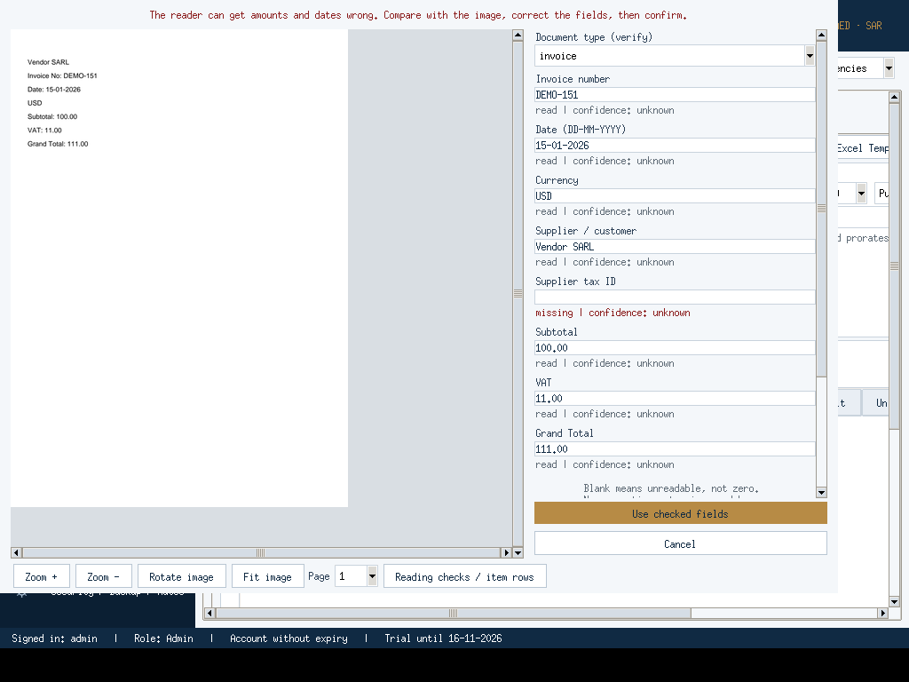
Quotations, consignment and purchase ordersعروض الأسعار والأمانة وأوامر الشراء
Dashboard → Quotes / Orders / Consignment. Save a draft, verify it, then Confirm. For a purchase order, record actual partial receipts and create an invoice draft only for received quantities. A receipt updates stock; its invoice does not enter the goods twice. Review the invoice in Uploaded Data, then record its payment in Payments. Matching report shows quantities and price differences. A consignment note is not an invoice: record physical warehouse transfers separately in Stock Documents.
لوحة القيادة ← العروض والطلبات والأمانة. احفظ المسودة وراجعها ثم أكّدها. سجّل الاستلام الجزئي الفعلي لأمر الشراء، وأنشئ مسودة فاتورة بالكميات المستلمة فقط. الاستلام يزيد المخزون؛ الفاتورة لا تدخل البضاعة مرتين. راجع الفاتورة في البيانات المرفوعة ثم سجّل الدفع في الدفعات. تقرير المطابقة يظهر الكميات وفروق الأسعار. سند الأمانة ليس فاتورة؛ سجّل النقل الفعلي بين المستودعات بشكل منفصل في مستندات المخزون.
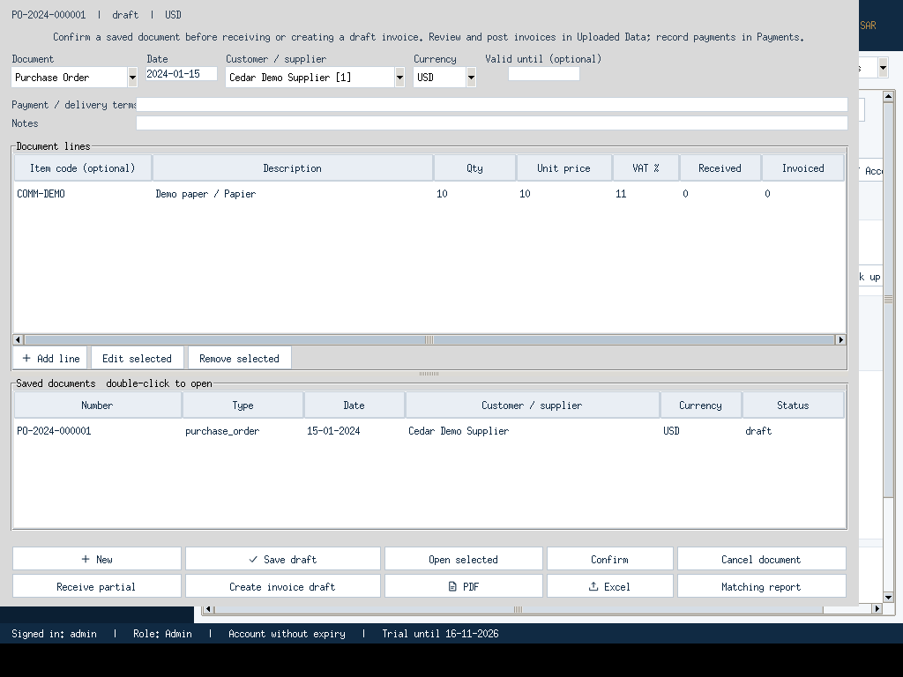
Open a local training videoفتح فيديو تدريب محلي
Choose your own MP4/WebM training video. It plays on this computer only; it is not uploaded. No video course is bundled with this version.
اختر فيديو التدريب الخاص بك بصيغة MP4 أو WebM. يعمل على هذا الجهاز فقط ولا يتم رفعه. هذه النسخة لا تتضمن دورة فيديو مسجلة.
The Dashboardلوحة القيادة
Your company at a glance, and the shortcuts you use every day.نظرة سريعة على الشركة، والاختصارات التي تستعملها يومياً.
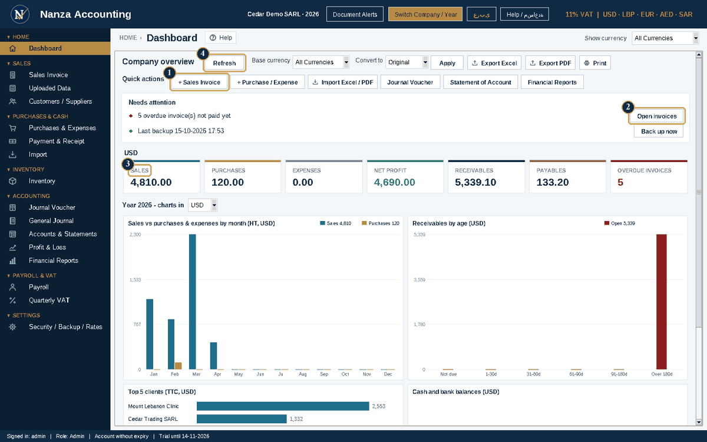
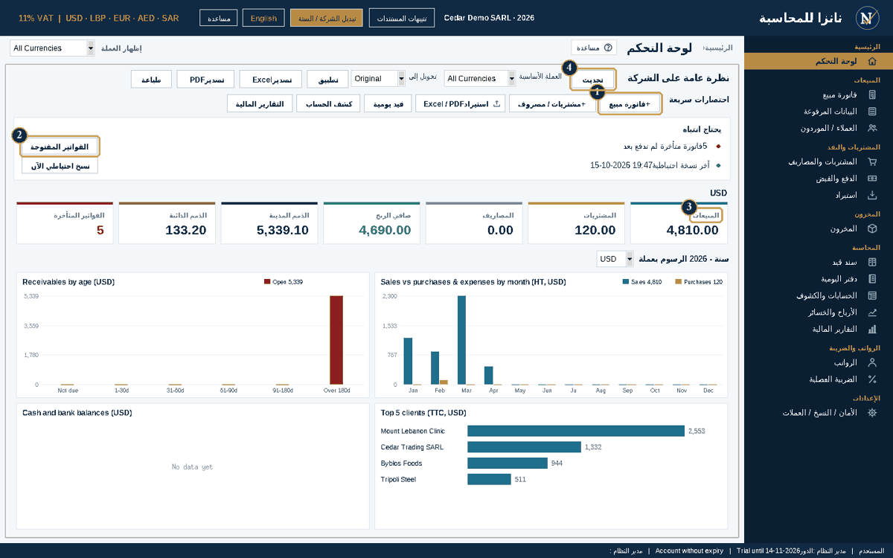
- 1Quick actions open the screens you use every day in one click.الاختصارات تفتح الشاشات التي تستعملها يومياً بنقرة واحدة.
- 2Needs attention: overdue invoices to follow up and the date of the last backup.قسم «يحتاج انتباه»: الفواتير المتأخرة التي يجب متابعتها وتاريخ آخر نسخة احتياطية.
- 3The cards show the year's sales, purchases, expenses, net profit, receivables and payables.البطاقات تعرض مبيعات السنة والمشتريات والمصاريف وصافي الربح والذمم المدينة والدائنة.
- 4Press Refresh after entering new documents to update the figures and charts.اضغط Refresh بعد إدخال مستندات جديدة لتحديث الأرقام والرسوم.
Create a new companyإنشاء شركة جديدة
Four short steps: company, country and chart of accounts, currencies and VAT, fiscal year.أربع خطوات قصيرة: الشركة، البلد ودليل الحسابات، العملات والضريبة، السنة المالية.
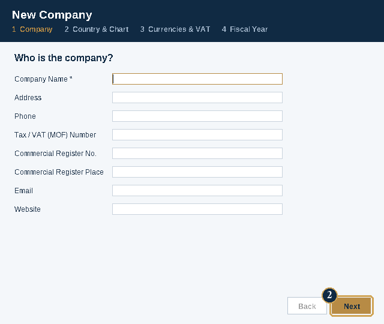
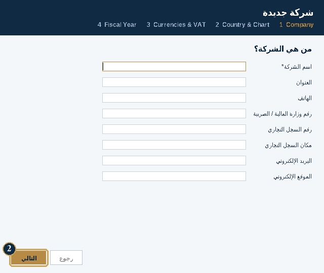
- 1Choose the country: Lebanon, International (IFRS), Saudi Arabia or UAE. The chart of accounts, currencies and VAT follow.اختر البلد: لبنان أو دولي (IFRS) أو السعودية أو الإمارات. دليل الحسابات والعملات والضريبة تتبع الاختيار.
- 2Next takes you to the currencies and VAT (filled for you), then the fiscal year.زر Next ينقلك إلى العملات والضريبة (معبّأة تلقائياً) ثم السنة المالية.
- 3Create Company on the last step: the company opens with its chart ready.اضغط Create Company في الخطوة الأخيرة: تُفتح الشركة ودليل حساباتها جاهز.
Make a sales invoiceإنشاء فاتورة مبيع
Choose the customer, add the lines, save and print.اختر الزبون، أضف الأسطر، احفظ واطبع.
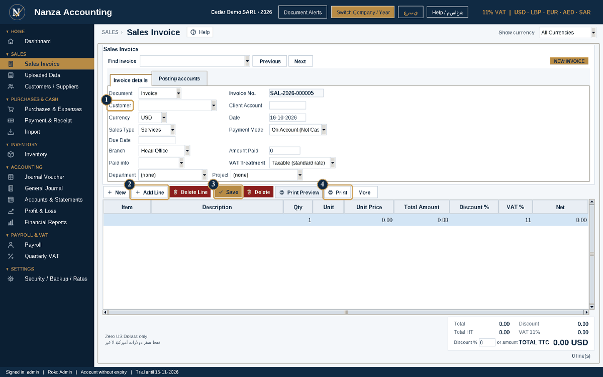
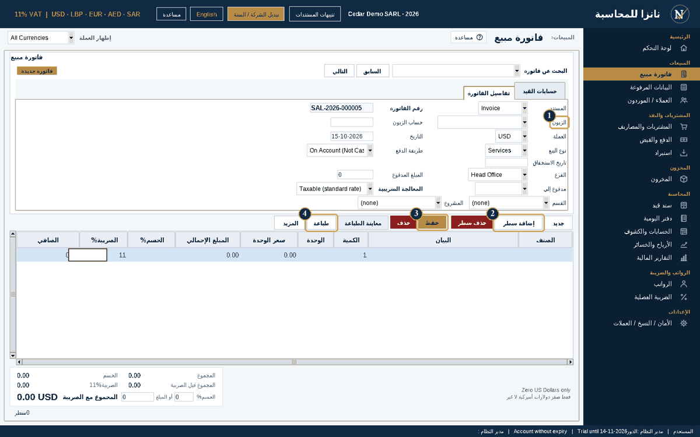
- 1Choose the customer (type a few letters to search). The invoice number is filled in for you.اختر الزبون (اكتب بعض الأحرف للبحث). رقم الفاتورة يُعبّأ تلقائياً.
- 2Add a line for each item or service: quantity, unit price, discount and VAT.أضف سطراً لكل صنف أو خدمة: الكمية وسعر الوحدة والحسم والضريبة.
- 3Save posts the invoice to the books: customer, sales and VAT accounts.زر الحفظ يقيّد الفاتورة في الدفاتر: حساب الزبون والمبيعات والضريبة.
- 4Print the invoice. More ▾ has PDF, Excel, Duplicate and Return (goods back).اطبع الفاتورة. في قائمة More ▾ تجد PDF وExcel والنسخ والمرتجع.
Record a customer receipt or a supplier paymentتسجيل قبض من زبون أو دفع لمورد
Money in from customers and out to suppliers, settled against their invoices.المقبوضات من الزبائن والمدفوعات للموردين، مع ربطها بفواتيرهم.
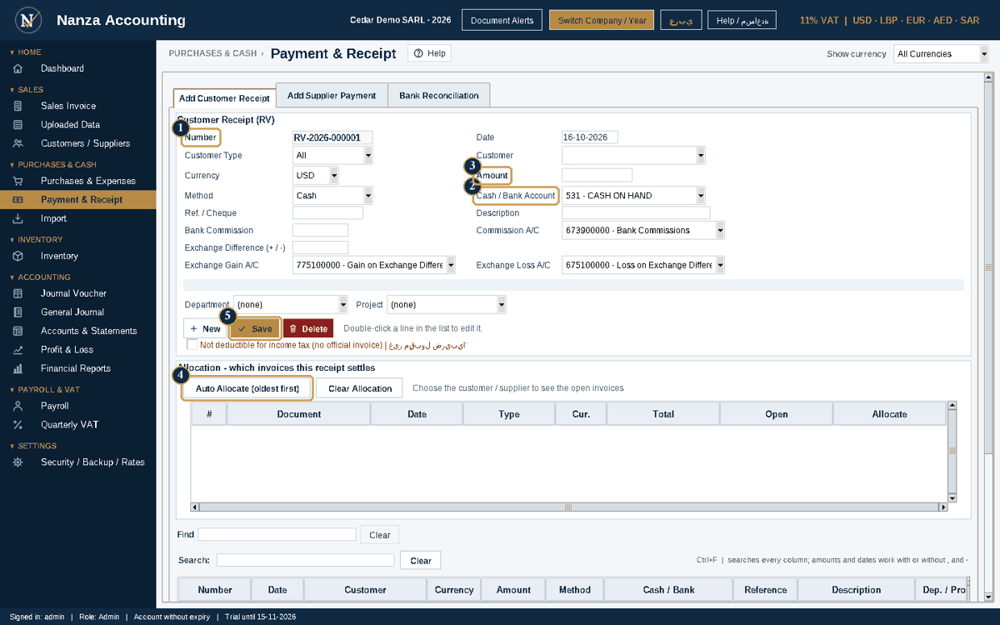
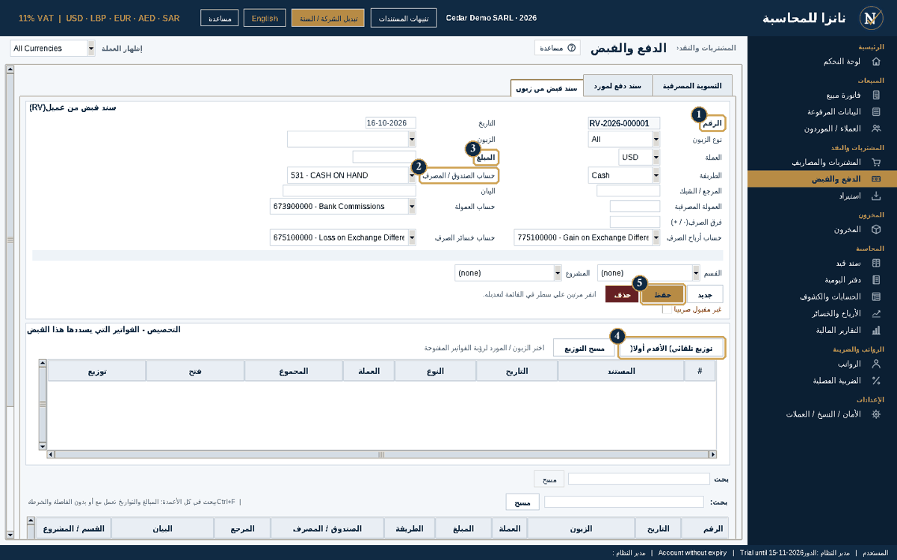
- 1The receipt number (RV) and the date. Use the tab Add Supplier Payment for payments (PV).رقم سند القبض (RV) والتاريخ. لسندات الدفع (PV) استعمل تبويب Add Supplier Payment.
- 2Choose the customer, then the cash box or the bank account that receives the money.اختر الزبون ثم الصندوق أو الحساب المصرفي الذي يستلم المبلغ.
- 3Enter the amount and the currency.أدخل المبلغ والعملة.
- 4Settle the oldest open invoices first, or type the amount on each invoice.سدّد الفواتير الأقدم أولاً تلقائياً، أو اكتب المبلغ على كل فاتورة.
- 5Save the receipt: it is posted and the invoices show as paid.احفظ السند: يُقيّد في الدفاتر وتظهر الفواتير مدفوعة.
Record a purchase invoiceتسجيل فاتورة شراء
Supplier invoices by hand or read from a PDF.فواتير الموردين يدوياً أو بقراءتها من ملف PDF.
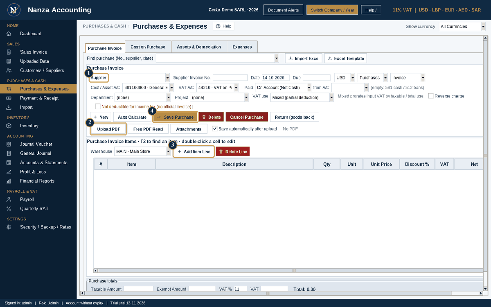
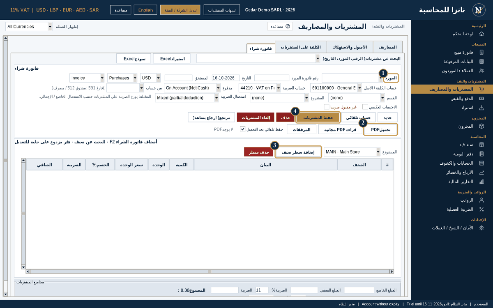
- 1Choose the supplier and type the supplier's invoice number and date.اختر المورد واكتب رقم فاتورة المورد وتاريخها.
- 2Or upload the PDF: the program reads the supplier, date, amounts and VAT for you to check.أو حمّل ملف PDF: يقرأ البرنامج المورد والتاريخ والمبالغ والضريبة لتراجعها.
- 3Add the items or the expense lines.أضف الأصناف أو أسطر المصاريف.
- 4Save: the purchase is posted with its deductible VAT.احفظ: تُقيّد المشتريات مع الضريبة القابلة للاسترداد.
All invoices (Uploaded Data)كل الفواتير (البيانات المحمّلة)
Find, edit and export every sales and purchase invoice.ابحث وعدّل وصدّر كل فواتير المبيع والشراء.
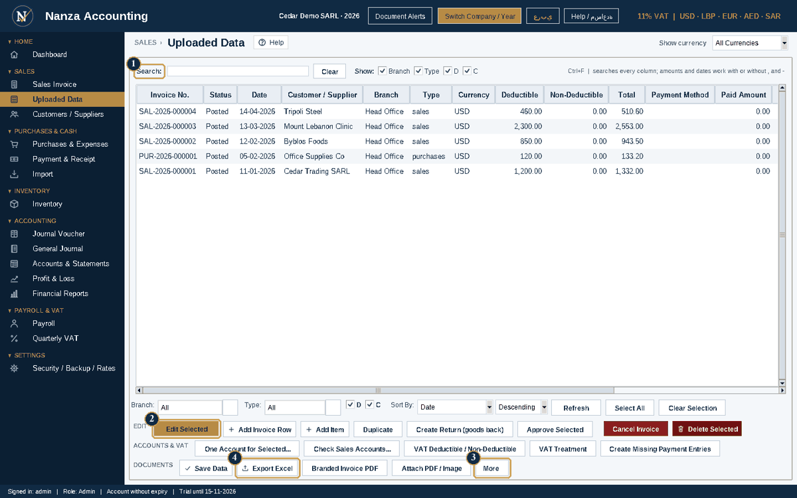
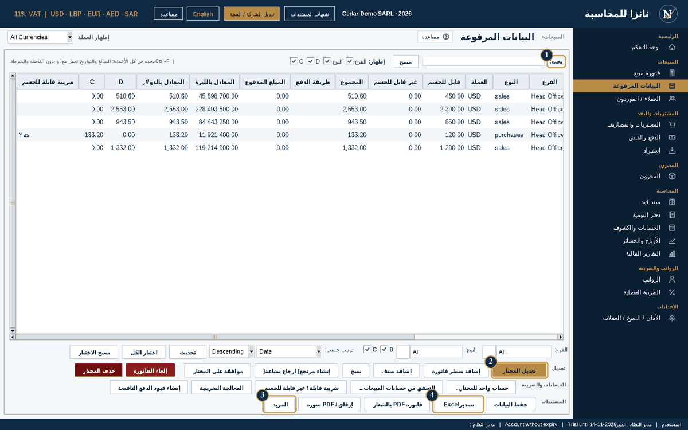
- 1Search any column: number, customer, amount or date.ابحث في أي عمود: الرقم أو الزبون أو المبلغ أو التاريخ.
- 2Select a line and edit it.اختر سطراً وعدّله.
- 3More ▾ holds the actions used less often: attachments, history, VAT treatment...قائمة More ▾ تضم الأوامر الأقل استعمالاً: المرفقات والسجل ومعالجة الضريبة...
- 4Export the list to Excel.صدّر القائمة إلى Excel.
Import invoices from Excel or PDFاستيراد فواتير من Excel أو PDF
Bring many invoices at once, check them, then save.أدخل فواتير كثيرة دفعة واحدة، راجعها، ثم احفظ.
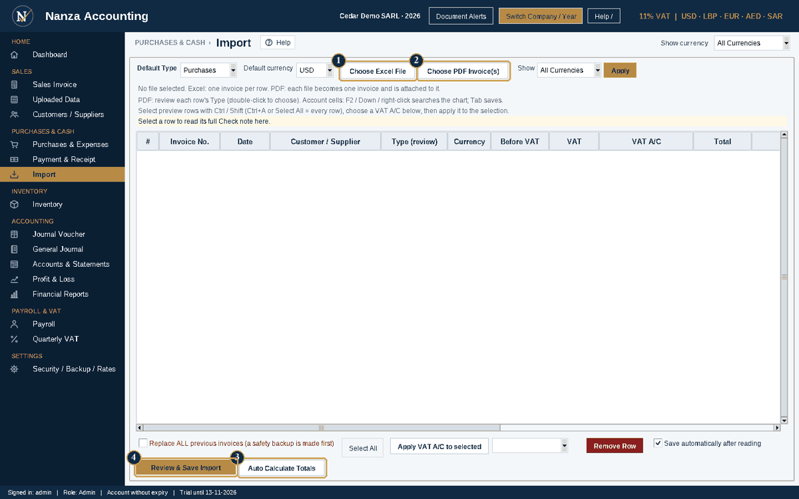
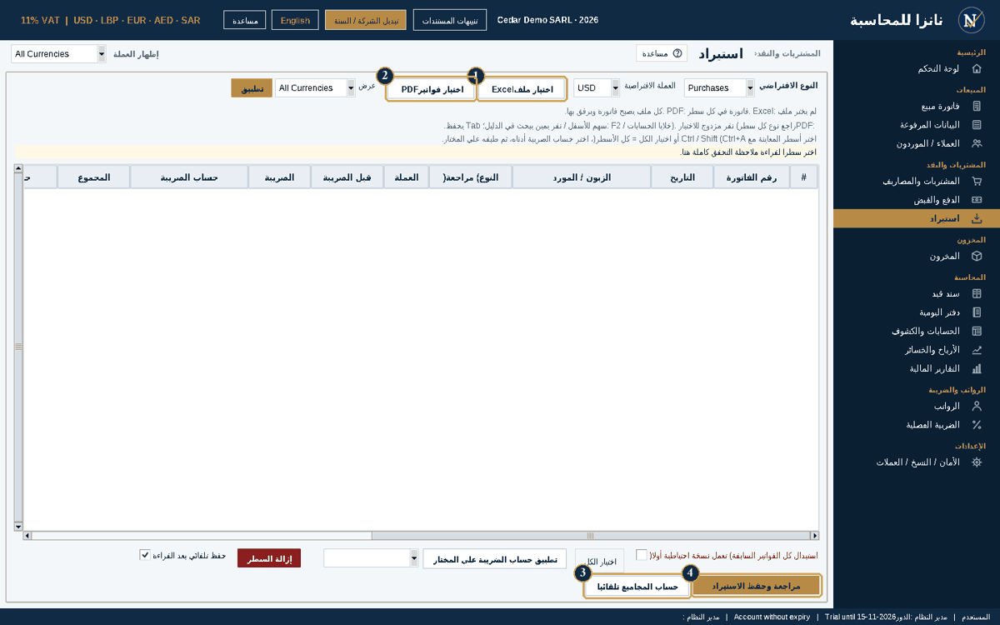
- 1Choose an Excel file with one row per invoice (or per line).اختر ملف Excel فيه سطر لكل فاتورة (أو لكل بند).
- 2Or choose PDF invoices: they are read, even scanned ones.أو اختر فواتير PDF: تُقرأ حتى لو كانت ممسوحة ضوئياً.
- 3Check the rows; totals and VAT are calculated for you.راجع الأسطر؛ المجاميع والضريبة تُحتسب تلقائياً.
- 4Save the import. Duplicates are shown before anything is saved.احفظ الاستيراد. الفواتير المكررة تظهر قبل الحفظ.
Customers and suppliersالزبائن والموردون
Each customer and supplier with its own account, contacts and documents.لكل زبون ومورد حسابه الخاص وبياناته ومستنداته.
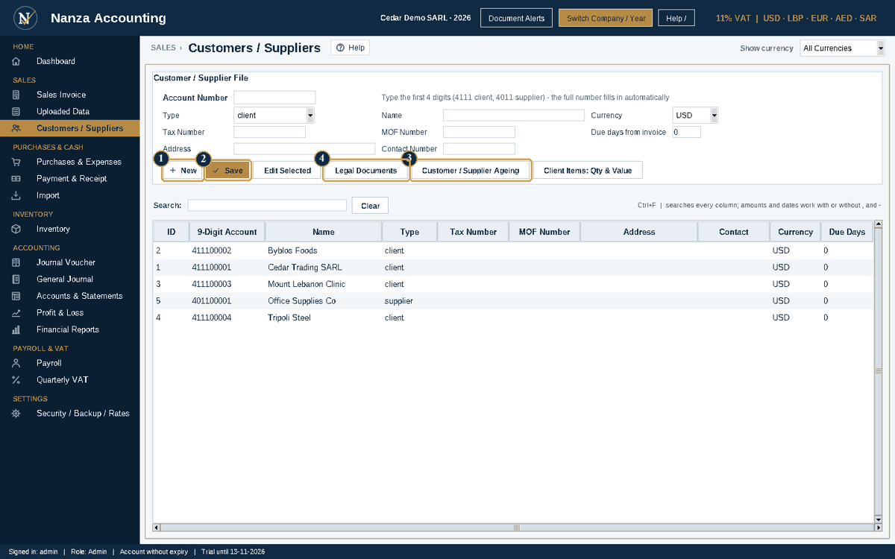
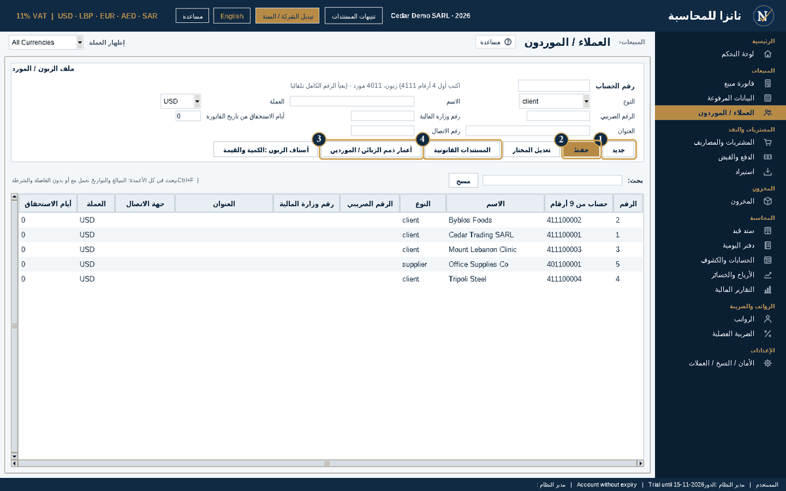
- 1New: clear the form for a new customer or supplier.جديد: افرغ النموذج لزبون أو مورد جديد.
- 2Fill in the name, currency and contact, then save: the account number is created for you.املأ الاسم والعملة ووسائل الاتصال ثم احفظ: يُنشأ رقم الحساب تلقائياً.
- 3See who owes what, by age of the invoices.اعرض المبالغ المستحقة حسب عمر الفواتير.
- 4Keep their legal documents with expiry reminders.احتفظ بالمستندات القانونية مع تذكير بتاريخ الانتهاء.
Items and stockالأصناف والمخزون
Items, prices and the stock of each warehouse.الأصناف والأسعار ومخزون كل مستودع.
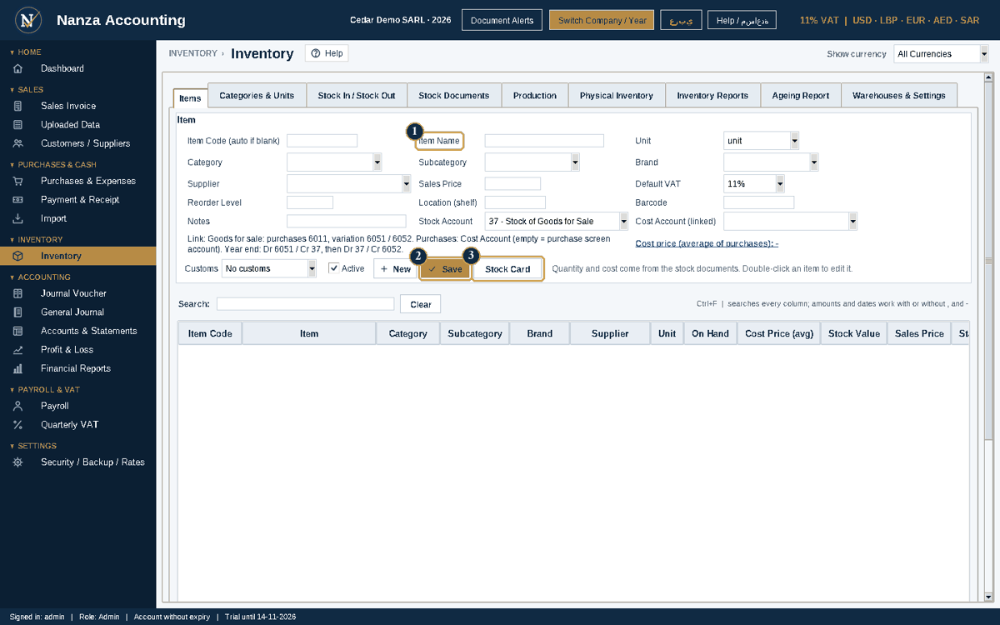
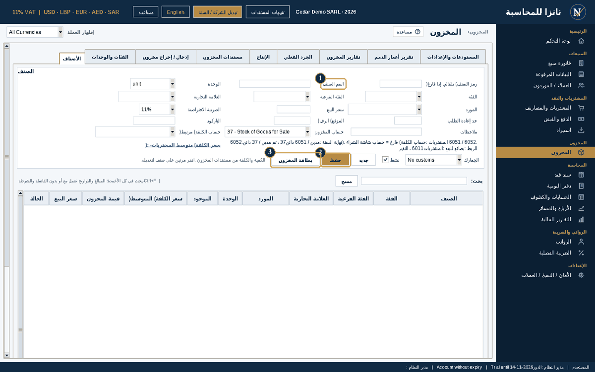
- 1Fill in the item: name, unit, category, sales price and VAT.املأ بيانات الصنف: الاسم والوحدة والفئة وسعر البيع والضريبة.
- 2Save the item. The code is given automatically when left blank.احفظ الصنف. يُعطى الرمز تلقائياً إذا تُرك فارغاً.
- 3The stock card shows every movement and the average cost.بطاقة المخزون تعرض كل حركة ومتوسط الكلفة.
Journal voucherقيد يومية
Any entry that is not an invoice, receipt or payment.أي قيد ليس فاتورة ولا سند قبض أو دفع.
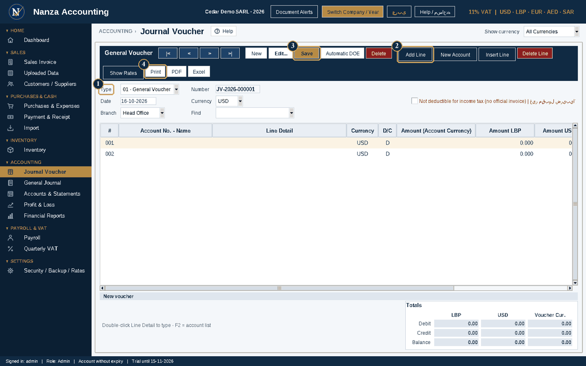
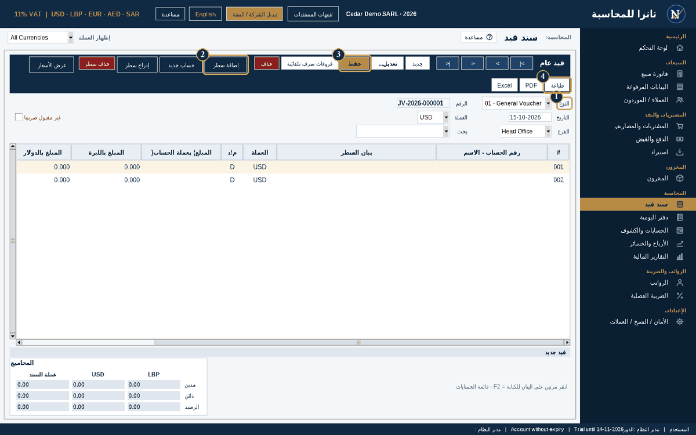
- 1Choose the type of voucher and the date.اختر نوع القيد والتاريخ.
- 2Add the lines: account (F2 to search), debit or credit, currency.أضف الأسطر: الحساب (F2 للبحث) ومدين أو دائن والعملة.
- 3Save when debit equals credit (the balance is shown at the bottom).احفظ عندما يتساوى المدين مع الدائن (الرصيد ظاهر في الأسفل).
- 4Print or export the voucher.اطبع القيد أو صدّره.
General Journalدفتر اليومية العام
Every entry of the year, with filters.كل قيود السنة مع إمكانية التصفية.
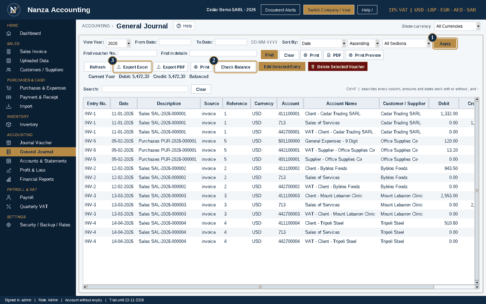
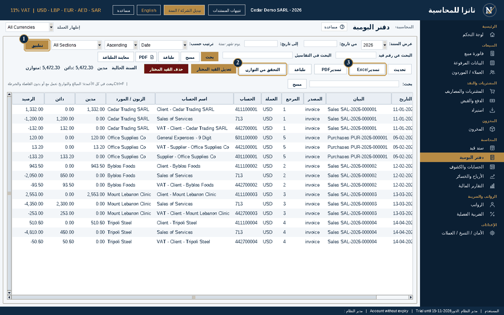
- 1Choose the dates and filters, then Apply.اختر التواريخ والمرشحات ثم اضغط Apply.
- 2Check that the books balance.تحقق من توازن الدفاتر.
- 3Export to Excel or PDF.صدّر إلى Excel أو PDF.
Trial balance and statements of accountميزان المراجعة وكشوف الحسابات
Balances of every account and the detail of one account.أرصدة كل الحسابات وتفاصيل حساب واحد.
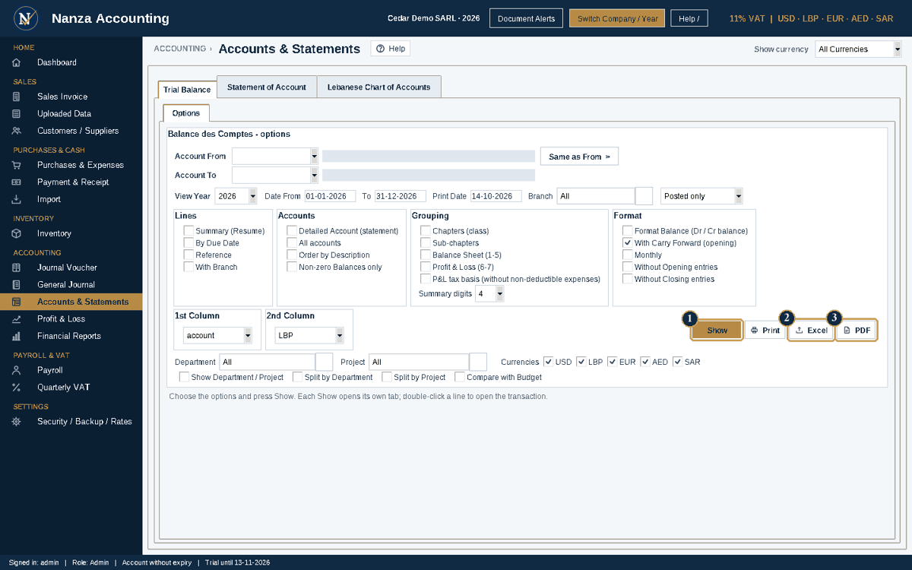
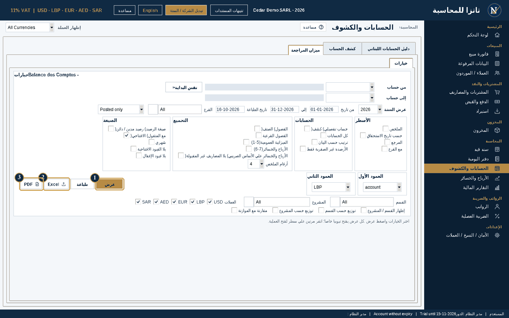
- 1Choose the dates and accounts, then Show. Double-click a line to see its entries.اختر التواريخ والحسابات ثم Show. انقر مرتين على سطر لرؤية قيوده.
- 2Export to Excel.صدّر إلى Excel.
- 3Or to PDF, ready to print.أو إلى PDF جاهز للطباعة.
Profit & Loss and year endالأرباح والخسائر وإقفال السنة
The result of the year and the closing of the year.نتيجة السنة وإقفالها.
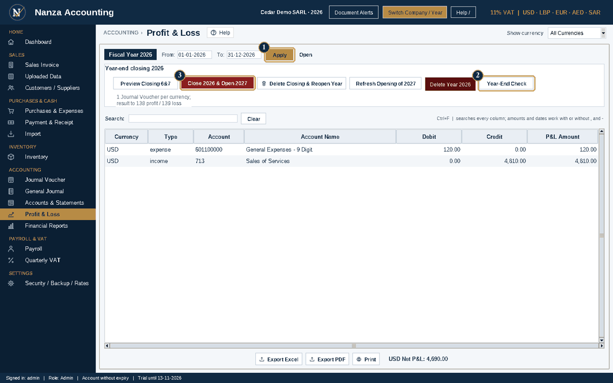
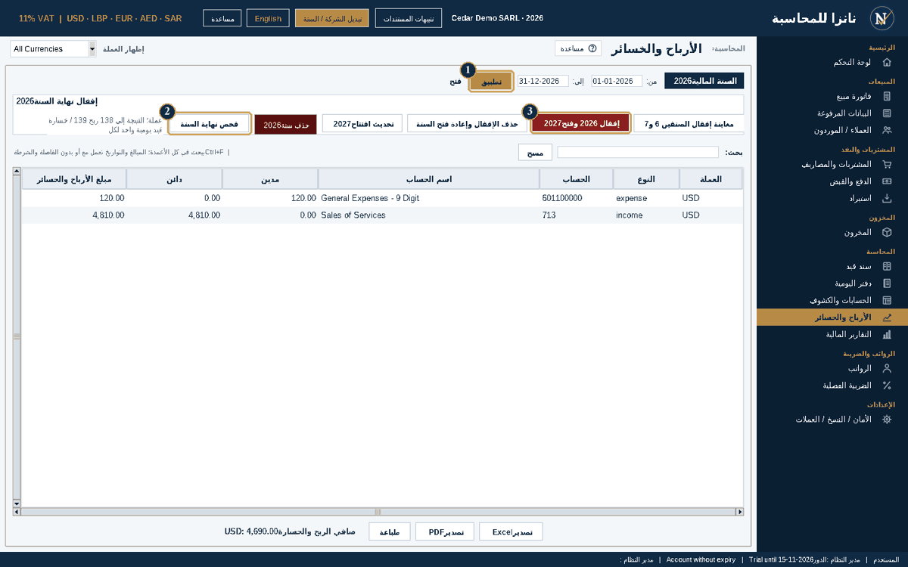
- 1Choose the period and Apply.اختر الفترة واضغط Apply.
- 2Before closing: the year-end check lists what to fix.قبل الإقفال: فحص نهاية السنة يعرض ما يجب تصحيحه.
- 3Close the year and open the next one with its opening balances.أقفل السنة وافتح السنة التالية بأرصدتها الافتتاحية.
Financial reportsالتقارير المالية
Financial statements, notes, audit pack and management reports.البيانات المالية والإيضاحات وملف التدقيق وتقارير الإدارة.
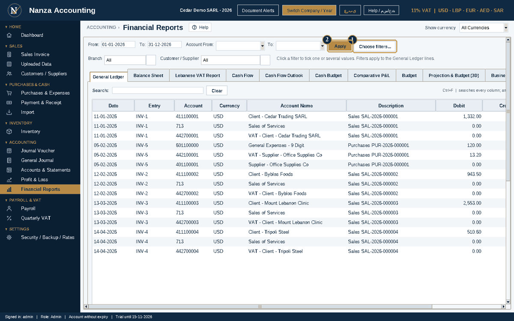
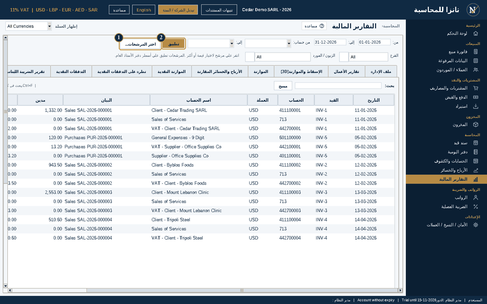
- 1Choose the report and its filters.اختر التقرير والمرشحات.
- 2Apply to see it on screen.اضغط Apply لعرضه على الشاشة.
- 3Export to PDF or Excel, in English, French or Arabic.صدّر إلى PDF أو Excel بالإنكليزية أو الفرنسية أو العربية.
Payrollالرواتب
Employees, monthly payroll and the NSSF / MOF forms.الموظفون والرواتب الشهرية ونماذج الضمان الاجتماعي ووزارة المالية.
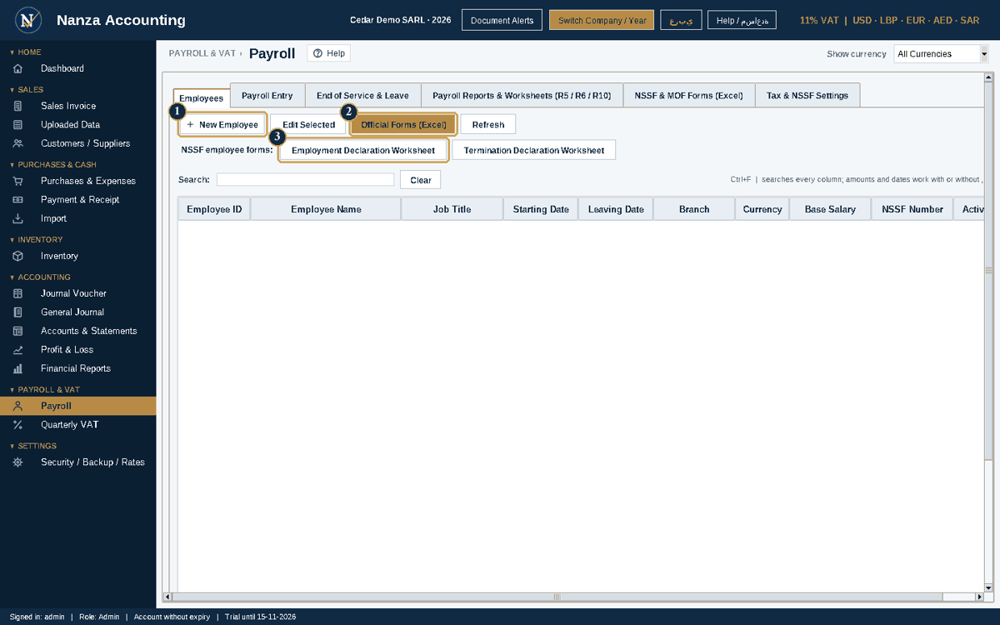
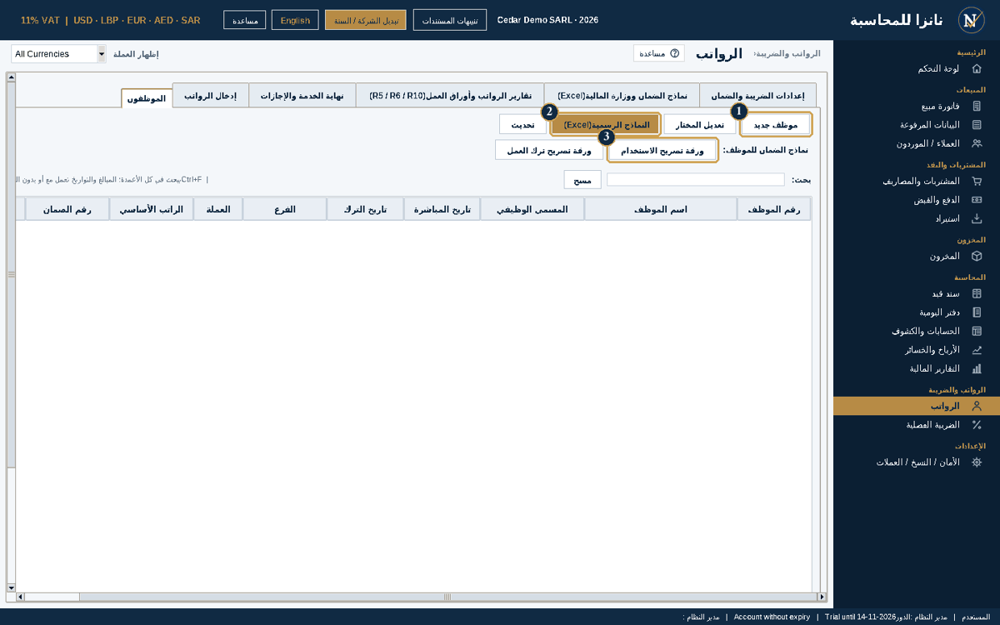
- 1Add an employee with salary, family and NSSF details.أضف موظفاً مع الراتب والوضع العائلي وبيانات الضمان.
- 2Fill the official forms in Excel from the payroll.عبّئ النماذج الرسمية في Excel من الرواتب.
- 3Prepare the NSSF declarations of employment and termination.حضّر تصاريح الضمان للتوظيف وترك العمل.
Quarterly VAT returnالتصريح الفصلي للضريبة على القيمة المضافة
The VAT return of each quarter, ready to file.تصريح كل فصل جاهز للتقديم.
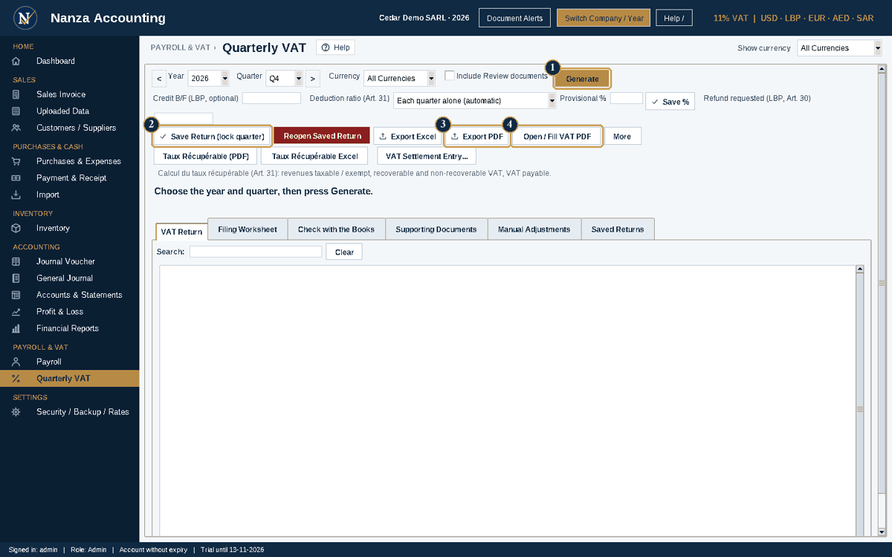
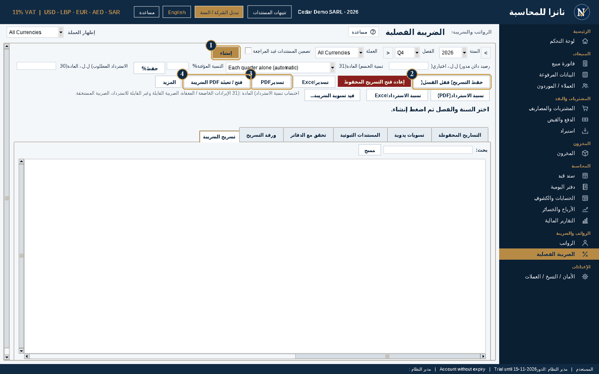
- 1Choose the quarter and Generate: the boxes are filled from the books.اختر الفصل واضغط Generate: تُعبّأ الخانات من الدفاتر.
- 2Save the return: the quarter is locked so the filed figures stay true.احفظ التصريح: يُقفل الفصل لتبقى الأرقام المصرّح بها صحيحة.
- 3Export the return to PDF or Excel.صدّر التصريح إلى PDF أو Excel.
- 4Fill the official VAT form.عبّئ النموذج الرسمي للضريبة.
Settings, users and backupsالإعدادات والمستخدمون والنسخ الاحتياطي
Users and permissions, backups, rates, numbering and accounting settings.المستخدمون والصلاحيات والنسخ الاحتياطي وأسعار الصرف والترقيم وإعدادات المحاسبة.
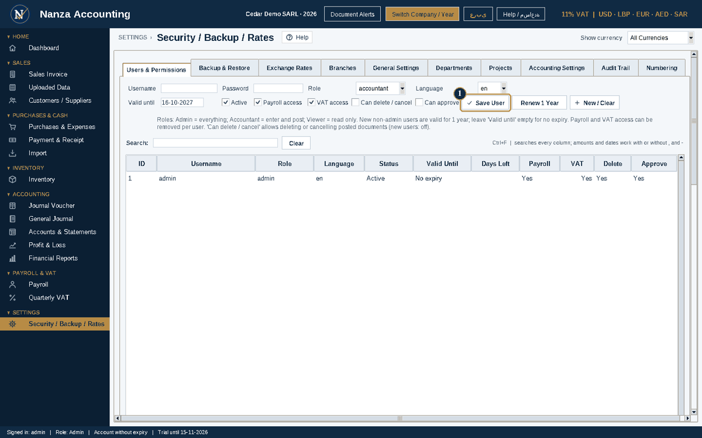
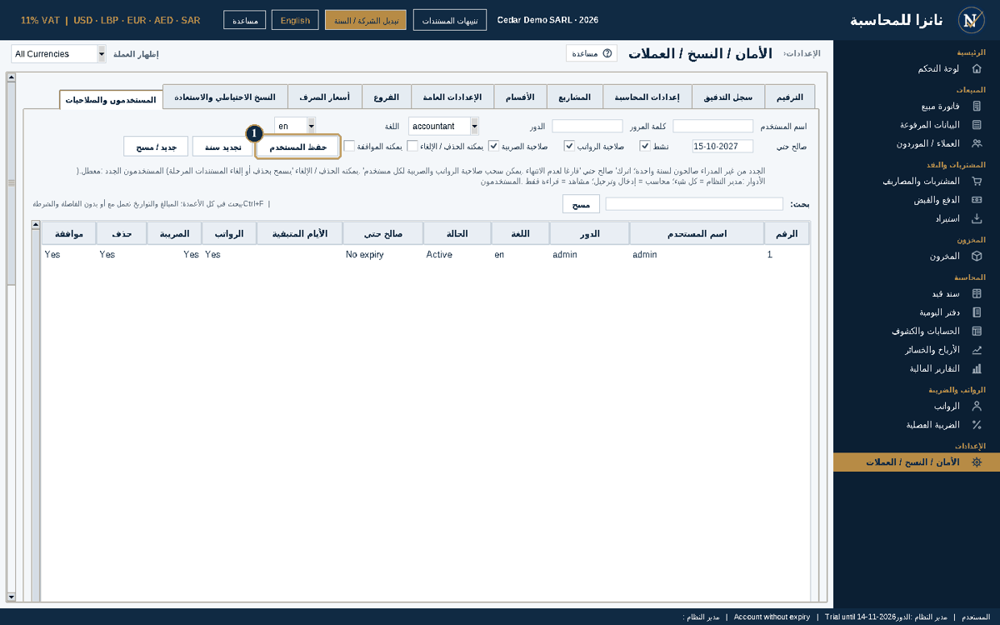
- 1Users & Permissions: add a user with a role and the screens he may use.المستخدمون والصلاحيات: أضف مستخدماً مع دوره والشاشات المسموحة له.
- 2Companies...: the companies this user may open (none ticked = every company). An accounting office gives each clerk only his clients.الشركات...: الشركات التي يحق لهذا المستخدم فتحها (لا شيء محدد = كل الشركات). مكتب المحاسبة يعطي كل موظف زبائنه فقط.
- 3Backup & Restore: Create Backup Now, and a second copy on OneDrive or a USB disk.النسخ الاحتياطي: Create Backup Now، ونسخة ثانية على OneDrive أو قرص USB.
- 4Numbering: the prefix of each document, the branch in the number, and Renumber by date.الترقيم: بادئة كل مستند، والفرع في الرقم، وإعادة الترقيم حسب التاريخ.
Start with Nanza and check the booksابدأ مع نانزا وافحص الدفاتر
Bring the balances of the old program in one Excel file, then check that every number is where it should be.انقل أرصدة البرنامج القديم بملف Excel واحد، ثم افحص أن كل رقم في مكانه.
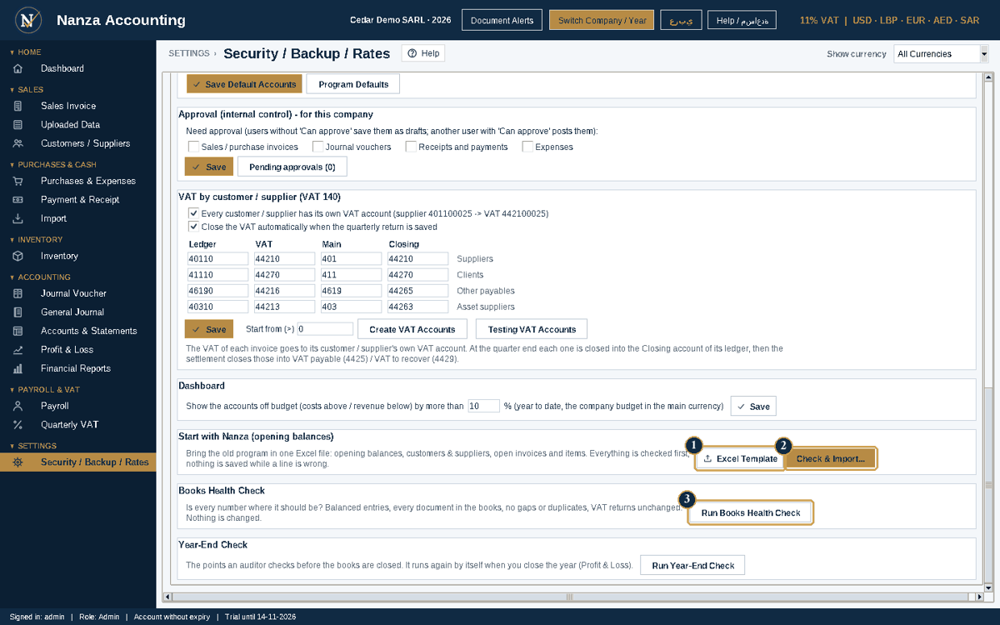
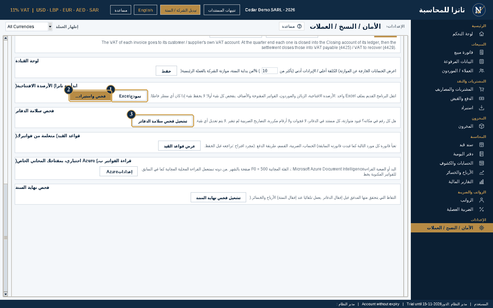
- 1Save the Excel template: opening balances, customers & suppliers, open invoices and items, one sheet each.احفظ نموذج Excel: الأرصدة الافتتاحية، الزبائن والموردون، الفواتير المفتوحة والأصناف، كل منها في ورقة.
- 2Choose the filled file: every line is checked first and nothing is saved while one is wrong. Then Import.اختر الملف المعبّأ: يُفحص كل سطر أولاً ولا يُحفظ شيء إذا كان أي سطر خاطئاً. ثم اضغط استيراد.
- 3Books Health Check: balanced entries, every document in the books, no gaps or duplicate numbers, VAT returns unchanged.فحص سلامة الدفاتر: قيود متوازنة، كل مستند في الدفاتر، لا فجوات ولا أرقام مكررة، التصاريح الضريبية لم تتغير.
Posting rules and reading invoicesقواعد القيد وقراءة الفواتير
The program remembers how you posted each supplier and fills the next invoice the same way - free, on your computer.يتذكّر البرنامج كيف قيّدت كل مورد ويعبّئ فاتورته التالية بالطريقة نفسها - مجاناً وعلى جهازك.
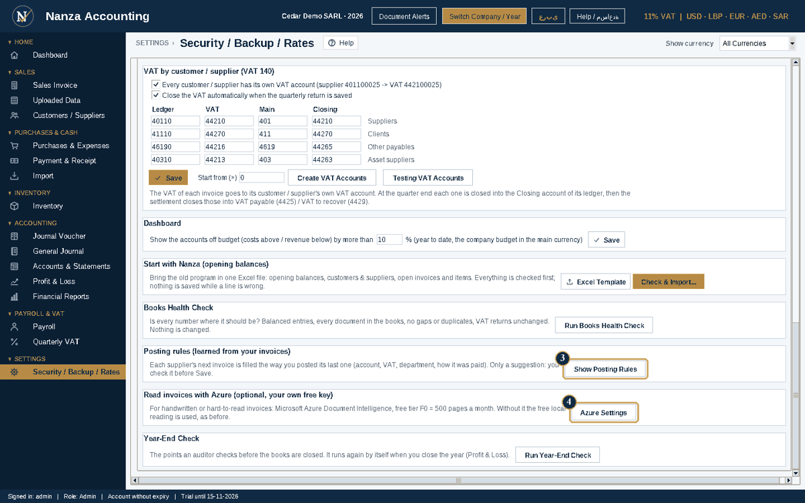
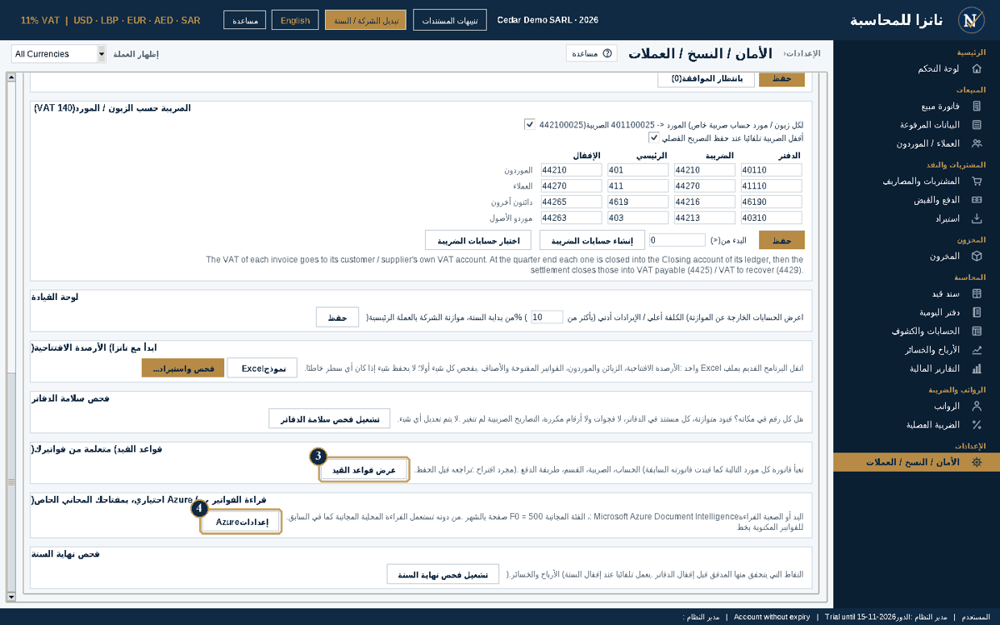
- 1Save a purchase or an expense as usual: its account, VAT, department and payment are learned for that supplier (by MOF number or name).احفظ فاتورة شراء أو مصروفاً كالمعتاد: يُحفظ حسابها وضريبتها وقسمها وطريقة دفعها لهذا المورد (بالرقم المالي أو بالاسم).
- 2Next time, choose the supplier or upload its PDF: the form is filled and the note says 'Posted like ... - check before Save'.في المرة التالية اختر المورد أو حمّل ملف PDF: تُعبّأ الشاشة وتظهر ملاحظة «قُيّدت مثل ... - راجعها قبل الحفظ».
- 3Show Posting Rules lists what was learned. Delete a rule to stop it.زر عرض قواعد القيد يُظهر ما تعلّمه البرنامج. احذف أي قاعدة لإيقافها.
- 4Optional, for handwritten invoices: your own free Azure key (500 pages a month). Then 'Read with Azure' appears on Purchases and Expenses.اختياري للفواتير المكتوبة بخط اليد: مفتاح Azure المجاني الخاص بك (500 صفحة بالشهر). بعدها يظهر زر «قراءة بـ Azure» في المشتريات والمصاريف.